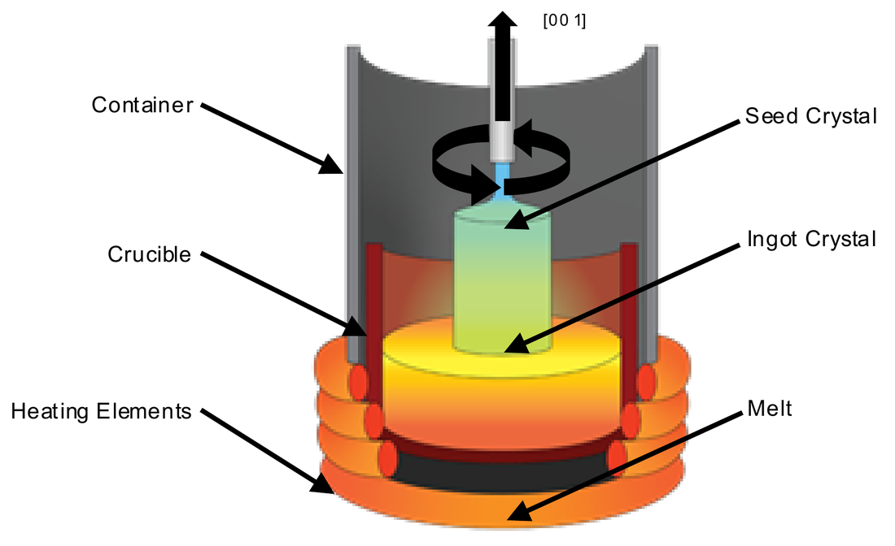
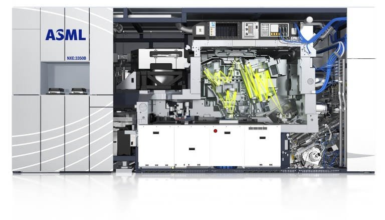
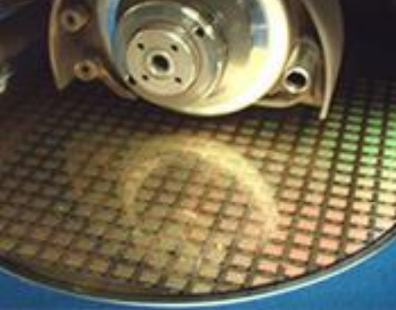
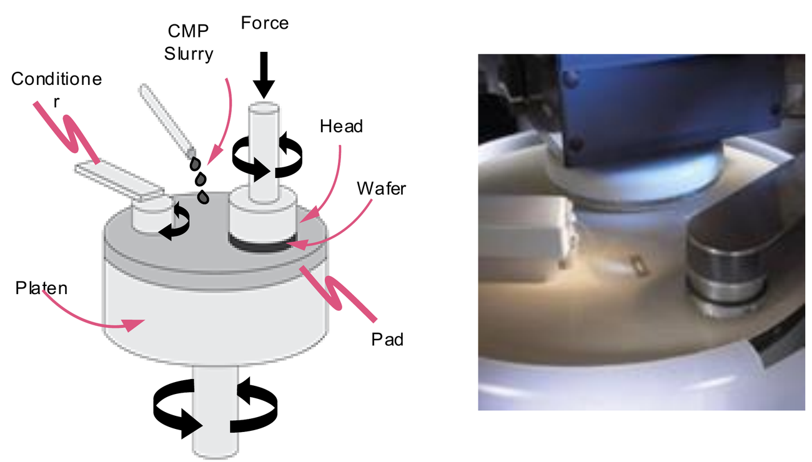
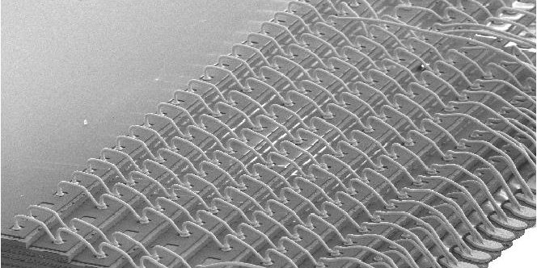
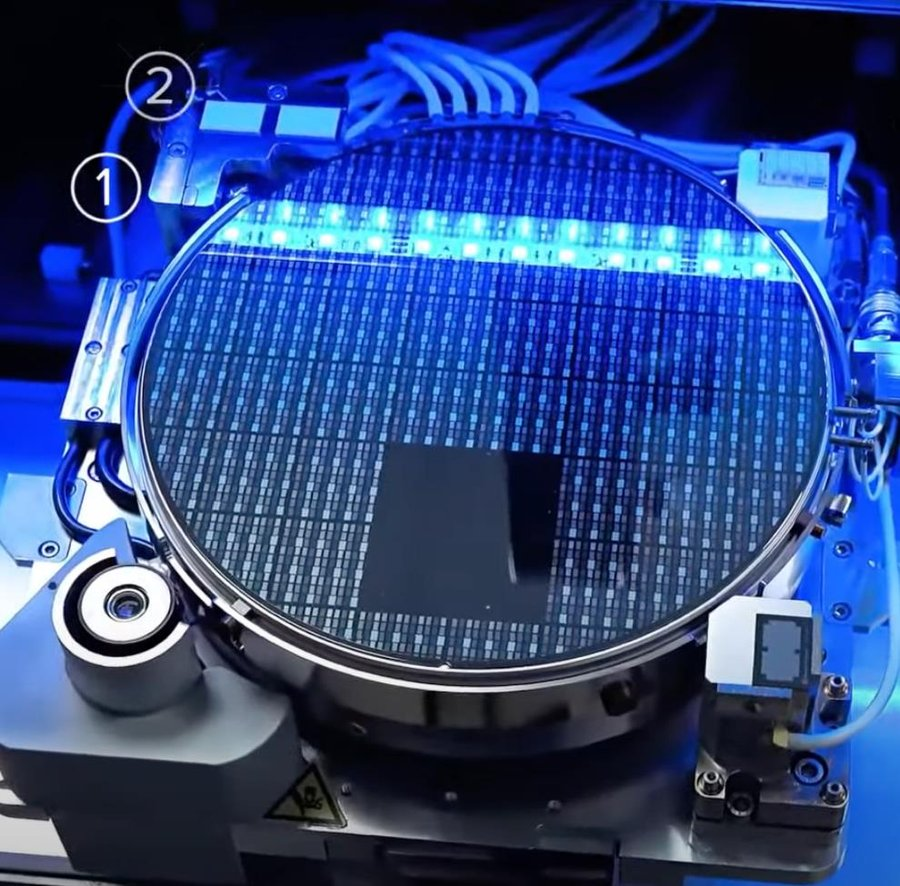

// From sand to packaged chip · The automation behind it · Careers
Each bar is 10 times shorter than the one above it, more or less. The transistors in the newest chips sit at the bottom of the ladder.
A phone processor holds more than 10 billion of them. The P-type and N-type regions you modeled in the Doping Lab are made by one of today's steps.
Chips start as silicon refined from sand until only about one atom in a billion is anything else. Then it has to become a single perfect crystal, like the lattice in the Doping Lab.
Grow the crystal. A seed crystal is dipped into molten silicon at about 1,420 °C, then turned and slowly pulled up. The atoms line up behind it into one huge crystal, the ingot.
Slice. Wire saws cut the ingot into wafers less than 1 mm thick and up to 300 mm (12 inches) across.
Polish and check. Each wafer is polished mirror-flat and checked for defects.

So how does a factory make billions of transistors at once? It could never place them one at a time. One 300 mm wafer becomes hundreds of chips, and every transistor on every chip is built at the same time.
The transistors and their wiring are built in layers. Each layer goes around the same loop, and a modern chip goes around it dozens of times.
Ion implantation is where the P-type and N-type regions get their dopant atoms.
CMP stands for chemical-mechanical polishing: a chemical slurry softens the top while a spinning pad grinds it flat, so the next pattern prints on a level surface.
Photolithography runs on the most complex machine in the fab: the EUV scanner.
Only ASML, in the Netherlands, builds them.
A laser hits molten tin 50,000 times a second to make 13.5 nm EUV light.
Air and glass absorb EUV, so it runs in a vacuum and focuses with mirrors.
About $200 million each, shipped in pieces on cargo planes.

A finished wafer holds hundreds of chips, called dies. The back end tests them, cuts them apart, and seals the good ones in a package.
Needles test every die on the wafer.
A diamond saw cuts the dies apart.
Good dies are glued to a lead frame.
Hair-thin wires join die to leads.
Black epoxy seals the die.
Every chip is tested again.

The black body of your 2N3904 is that molded package, with three leads from its lead frame.
“From Sand to Silicon: The Making of a Microchip” (Intel, 4:44). Look for each step you just saw: the crystal, the loop, and the back end.
These slides hold short videos and links for each part of the process. Watch them on your own device, at your own pace.
How a puller grows a silicon ingot.
The $200 million machine that prints patterns.
Every step of the loop in five minutes.
How CMP levels each layer.
Gold wires from the chip to its pins.
A 30-minute tour of a fab.
A seed crystal touches molten silicon and is pulled up slowly while it turns. This animation from UNSW shows how a Czochralski puller grows the ingot.
See how the scanner makes its light from tin and steers it with mirrors to print a layer's pattern.
ASML: how the EUV light is madeVeritasium: the full story (long)
TED-Ed walks through deposition, photolithography, etching, and doping in about five minutes.
A spinning pad and a chemical slurry grind each layer level, so the next pattern prints sharply. Every layer in a modern chip is polished this way.

A bonder melts a ball on the end of a gold wire, presses it onto the chip, loops the wire to a pin, and repeats several times a second.

Branch Education's 30-minute tour follows a chip through a whole fab. Watch a section at a time.

At wafer probe, a tester checks every die and marks it on a map as pass or fail. A healthy wafer has only a few failures, scattered at random.
When one step goes wrong, the failures form a pattern, and the pattern points to the step. The faint lines mark exposure fields: the block of dies printed by one flash in photolithography.
↓ Press the down arrow to see six patternsWhat went wrongThe polisher pressed harder near the wafer's edge, so the outer dies were polished too thin.
The sensor that catches itAn optical sensor looks through a window in the pad and measures the film's thickness while it polishes.
The actuator that corrects itThe head that holds the wafer has separate pressure zones. The controller lowers the pressure near the edge.
Learn more: Chemical-mechanical polishing
What went wrongOne heater zone in the chuck that holds the wafer ran hot, so the center etched too deep.
The sensor that catches itTemperature sensors in the chuck report each zone's temperature.
The actuator that corrects itThe controller turns each heater zone up or down to hold the whole wafer at one temperature.
Learn more: Etching
What went wrongEach flash prints one field from a mask. A speck of dust on the mask printed into the same die of every field.
The sensor that catches itCameras scan the mask for particles before it is loaded into the scanner.
The actuator that corrects itThe wafer stage steps from field to field, so one flaw repeats everywhere. The mask is pulled and cleaned.
Learn more: Photomask
What went wrongA robot arm was out of alignment and dragged the wafer across a guide while loading it.
The sensor that catches itEncoders on each robot joint report its position, and a vacuum sensor confirms the wafer is held.
The actuator that corrects itServo motors move each joint. A technician re-teaches the robot its pick-up and drop-off positions.
Learn more: Rotary encoder
What went wrongThe implanter delivered the wrong dose, so the doping in every transistor is off and almost every die fails.
The sensor that catches itA Faraday cup catches the ion beam and measures its current, which counts the ions delivered.
The actuator that corrects itThe controller adjusts the beam and how long it scans, and stops when the dose is reached.
Learn more: Ion implantation Faraday cup
What went wrongParticles fell on one part of the wafer: a leaking filter or a poorly worn gown let dust into the air.
The sensor that catches itParticle counters sample the air around the tools all day.
The actuator that corrects itFan filter units in the ceiling push filtered air straight down and sweep particles away.
Learn more: Cleanroom
Look back at the six patterns. Every one was caught by a sensor and corrected by an actuator, the same things you study in this course.
Temperature, vacuum pressure, cameras for alignment, thickness gauges, and beam current.
Wafer stages, robot arms, pumps, valves, heaters, and spinning pads and saws.
Each tool follows a recipe and its controller adjusts outputs from sensor readings.
The Phoenix area is one of the biggest chipmaking regions in the country.
Equipment, process, maintenance, and test technicians keep the tools running. Many start with a community college certificate or associate degree.
Process, equipment, yield, and automation engineers usually hold a bachelor's degree in engineering or science.
The skills from this course, sensors, actuators, control, and troubleshooting, are exactly what a fab technician uses every shift.
The front end builds layers in a loop on whole wafers. The back end tests, cuts, and packages each chip.
Every step depends on sensors, actuators, and control, and on the technicians who keep them working.